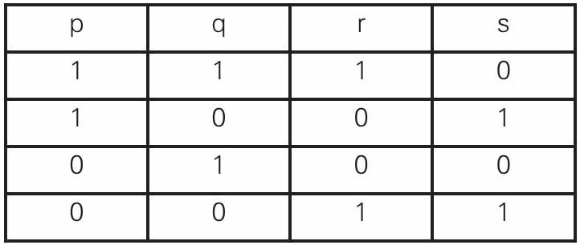

原始丛林中有一个逻辑学家正在打猎，他非常专注，并没有注意到危险将至。
几天后他身陷一个原始部落。部落酋长这天闲来无事，打算跟这个逻辑学家做一个生死游戏。
部落酋长于是对这个逻辑学家说：“听好了，你面前有两扇门。一扇门是自由之门，推开这扇门你就性命无忧了。另一扇门是死亡之门，推开这扇门你就得交出性命。你可任意开启其中的一扇门。另外，我还可以派两名士兵负责回答你提出的一个问题——注意，只能是一个——不过是这样，这两名士兵，其中一个说谎成性，句句话都是假的；另一个恰恰相反，他天性诚实，只说真话。对了，你还要注意一点，他们只能回答‘是’和‘否’，现在生死由你自己选择吧。”
随后两个士兵也登场了。
这个游戏部落酋长已经玩过很多次了，他挺喜欢玩这个游戏的，既显示了他的公平又显示了他的智商。
但是今天跟往常不同，不一会儿，有士兵（是那个说真话的！）来报告，那个“野蛮人”（他们称外面进来的人为野蛮人）打开了那扇“自由之门”——跑了！
那么，我们来看看，这个逻辑学家是怎样问的又是怎样做的呢？
逻辑学家可以这样做，手指一门，他问身边的士兵：“如果我问他（指另一士兵）：‘这扇门是死亡之门吗？’他将回答‘是’，你说对吗？”
逻辑学家所问身旁的士兵身份有两种（说谎成性的或天性诚实的），而他的回答也分两种（是或否），共计四种情形：
（1）如果被问的是诚实士兵，他回答“是”。这样，可以推断出另一名士兵是说谎者，且他回答“是”，所以这扇门不是死亡之门。
（2）如果被问的是诚实士兵，他回答“否”。则另一名士兵是说谎者，且他回答“否”，所以这扇门是死亡之门。
（3）如果被问的是说谎士兵，他回答“是”。则另一名士兵是诚实者，且他回答“否”，所以这扇门不是死亡之门。
（4）如果被问的是说谎士兵，他回答“否”。则另一名士兵是诚实者，且他回答“是”，所以这扇门是死亡之门。
归纳起来就是这样，当被问士兵回答“是”时，则所指的门不是死亡之门。
当被问士兵回答“否”时，则所指的门是死亡之门。
因此，就像前面所说的，逻辑学家问身旁的士兵：“这扇门是死亡之门，他将回答‘是’，你说对吗？”
当被问士兵回答“是”，则逻辑学家打开所指的门离去，当被问士兵回答“否”，则逻辑学家开启另一扇门，这样他就可以安全离开了。
假设p表示被问的士兵是诚实者，q表示被问士兵回答“是”。
r表示另一名士兵回答“是”，s表示所指的门是死亡之门。
则根据以上分析我们有如下的真值表，这个真值表可作为逻辑学家判断的依据：
逻辑运算真值表

（1、0分别表示相应列的命题真值为真或假）